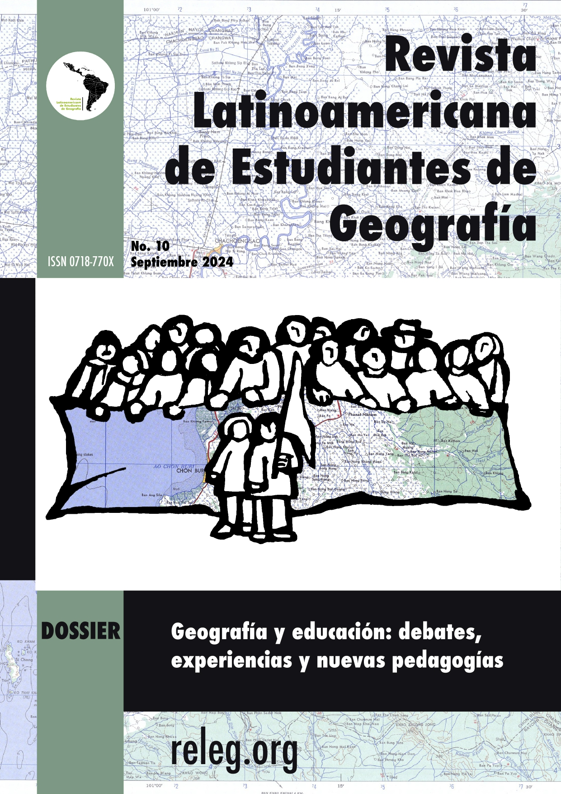

Apresentação
Número atual
Arquivo
Chamadas
Comitê Editorial
Regras editoriais
História e estatísticas
Apresentações
Contato
Español

Autora da imagem e vinhetas interiores: Rini Templeton
https://riniart.com
No. 10 (2024)
1
Editorial
DOSSIER
Geografía y educación: debates, experiencias y nuevas pedagogías
8
Cordel e Geografia Escolar - Possibilidades da temática no município de Santa Maria de Jetibá
Rodolfo Max Vieira de Castro Filho
24
Educación Ambiental desde Latinoamérica. Por una pedagogía decolonial, antirracista y feminista
Erica Nadia Leguizamón
36
Geografias descoloniais no Ensino Médio: (Re)visitando a demografia do Brasil na perspectiva dos multiletramentos
Leonardo Castro de Carvalho
51
Reflexiones y comparativas del modelo educativo aprendizajes clave y la nueva escuela mexicana en la enseñanza de la geografía en el nivel secundaria
María Dolores Lara Padilla
63
MONTAJE TESTIMONIAL DEL DOSSIER:
“Sobre la enseñanza de la geografía en América Latina”
67
Análisis físico o social: la continua disputa de la geografía mexicana y la participación comunitaria. Entrevista a Isamar Beatriz Cerón Pacheco
Sandra León Gil
73
La Geografía, nuestra disciplina, tiene que aparecer para erigirse como una voz disonante con respecto a los consensos discursivos del poder. Entrevista a Diego García Rios
Mauro Laborda Campos
80
La importancia de los Institutos de Formación Docente para promover la enseñanza de una Geografía incómoda frente a los tradicionalismos geográficos. Entrevista a Silvina Esther Olivares Yáñez
Mauro Laborda Campos
87
Somos seres completamente espaciales y el conocimiento geográfico está en nuestra vida cotidiana. Entrevista a Rosa Martha Peralta Blanco
Juan Manuel García Reyes
98
Sobre la enseñanza de la geografía en América Latina. Entrevista a Dimas Moraes Peixinho
Silvina Macarena Silva Bertolotto
108
La enseñanza de la geografía en un sistema abierto y desde un enfoque histórico y social: el espacio como “palimpsesto”. Entrevista a Jesús Israel Baxin Martínez
Valeria Consuelo de Pina Ravest
Silvana Esther Cachi Zambrana
121
Cruzando fronteras: enfoques de la enseñanza geográfica en Bolivia y España. Entrevista a María Lois Barrios
Tatiana Vargas Condori
CONFLICTOS TERRITORIALES
129
El extractivismo urbano y la apropiación de lo invisible
Sabrina Hebe Juárez
PLANIFICACIÓN Y GESTIÓN DEL TERRITORIO EN AMÉRICA LATINA
145
Arbolado urbano de alineación en la localidad de Estación Matilde
Juan Cruz Croppi
REPRESENTACIONES ESPACIALES
160
Palestina-Israel: cronología de un conflicto territorial
Santiago Javier Rodriguez
FOTOGRAFÍA
181
Capturando el riesgo
Pablo Leyes Zabala
POESÍA
186
El andar del río
Pablo Leyes Zabala
189
Líneas para luchar
Léa Lamotte
192
Palpar la frontera
Karla Renata Escamilla Cárdenas
195
Normas editoriales